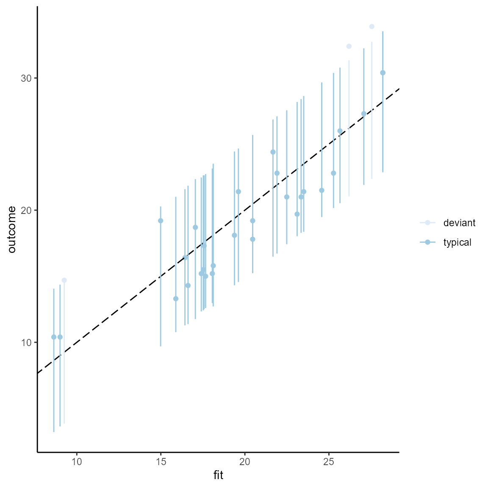
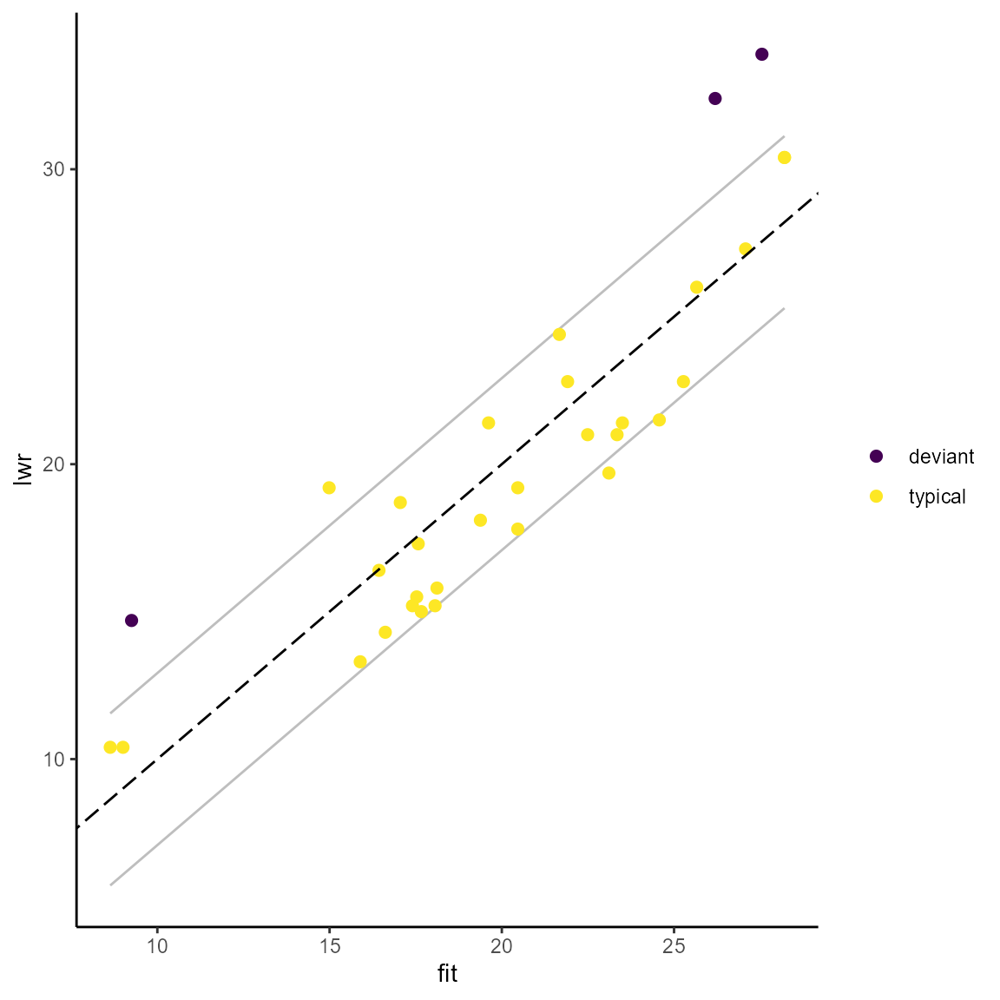

vignettes/Classification-as-typical-and-deviant.Rmd
Classification-as-typical-and-deviant.RmdThe classification (designation, assignment) of cases as typical and deviant needs to be distinguished from the actual choice of cases that are of a specific type. The package offers two ways of classifying cases. First, one can designate cases using the prediction interval or the standard deviation of the residuals. Both classification techniques require an lm object as input.
The approach using the prediction interval additionally requires the specification of the width of the interval. The % prediction interval represents the range of outcome values within which 95% of future outcome values are expected to fall in repeated samples. Following Rohlfing and Starke (2013), a case is designated as typical if the observed outcome value is inside the interval and as deviant otherwise.
Here is a simple example using the mtcars dataset and a 90% prediction interval (for no specific reason, the default value is 0.95). The output of the function is a dataframe with the observed and fitted outcome values, the upper and lower bound of the prediction interval and the case status based on the fitted value and the prediction interval that is specific to each case.
df <- lm(mpg ~ disp + wt, data = mtcars) pi_df <- predint(df, piwidth = 0.9) head(pi_df) #> fit lwr upr outcome status #> Mazda RX4 23.34543 18.28346 28.40741 21.0 typical #> Mazda RX4 Wag 22.49097 17.42387 27.55808 21.0 typical #> Datsun 710 25.27237 20.16282 30.38191 22.8 typical #> Hornet 4 Drive 19.61467 14.56390 24.66543 21.4 typical #> Hornet Sportabout 17.05281 11.75986 22.34575 18.7 typical #> Valiant 19.37863 14.31502 24.44224 18.1 typical
The designation of cases based on the prediction interval can be visualized with the predint_plot() command. The graph plots observed vs. fitted outcome values together with the % prediction interval. The plot is a gg object and can be edited with the usual commands of the ggplot2 package.
The input into the plotting function has to be a dataframe produced with predint(). The color scheme is the viridis color palette that is accustomed for colorblind readers and also works when printed in grey scale. If the viridis palette is not preferred, one can substitute it with any other scale_color_* scheme by adding it to the command.
predint_plot(pi_df)
# Using scale_color_brewer() instead of the viridis palette. predint_plot(pi_df) + scale_color_brewer() #> Scale for 'colour' is already present. Adding another scale for 'colour', #> which will replace the existing scale.

An alternative classification technique following Lieberman (2005) uses the standard deviation of the residuals. The command for assigning cases and typical and deviant is residstd(). The specification of stdshare determines how large the share of the residual standard deviation should be to distinguish typical from deviant cases. The default value is 1 (for no specific reason).
resid_df <- residstd(df, stdshare = 1.5) head(resid_df) #> fit residual.scale outcome status #> Mazda RX4 23.34543 2.916555 21.0 typical #> Mazda RX4 Wag 22.49097 2.916555 21.0 typical #> Datsun 710 25.27237 2.916555 22.8 typical #> Hornet 4 Drive 19.61467 2.916555 21.4 typical #> Hornet Sportabout 17.05281 2.916555 18.7 typical #> Valiant 19.37863 2.916555 18.1 typical
To my knowledge, it has not been proposed to plot the case classification resulting from this technique. However, it can be done and is available in this package with the command residstd_plot(). The standard deviation of the residual is necessarily the same for all cases and is represented by a symmetric corridor (parallel grey lines) around the bisecting line in a plot of observed vs. fitted outcome values. The plot is a gg object that can be accustomed with ggplot2 commands.
residstd_plot(resid_df)

R Core Team. 2020. R: A Language and Environment for Statistical Computing. Vienna, Austria: R Foundation for Statistical Computing. https://www.R-project.org/.
Rodriguez-Sanchez, Francisco. 2018. grateful: Facilitate Citation of R Packages. https://github.com/Pakillo/grateful.
Wickham, Hadley. 2016. ggplot2: Elegant Graphics for Data Analysis. Springer-Verlag New York. https://ggplot2.tidyverse.org.